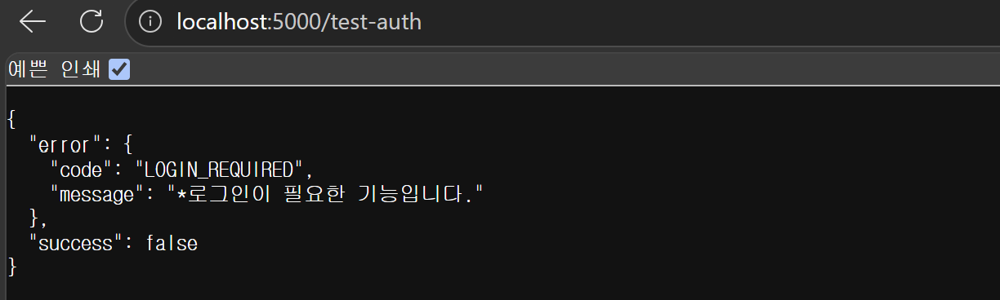

현재 수강 중인 오픈SW플랫폼이라는 전공 수업은 웹 프로젝트 팀플(FE/BE)을 진행하고 최종 발표에서 데모를 선보여야 하는 수업이다.
정해진 팀플 주제에 따라 우리 팀은 이화여대 학생들끼리 핸드메이드 작품을 사고파는 마켓 Emade를 만들고 있다.
필자는 그중 백엔드(Flask)를 맡고 있고, 로그인 기능은 교수님이 정한 필수 요구사항이었다.
백엔드는 세 명이 나눠 맡았고, 필자는 회원가입과 로그인을 포함한 회원·유저 파트를 맡았다.
API 명세를 쓰다 보니 거의 모든 API에 로그인 필요 O/X 칸이 있었는데,
로그인이 필요한 API에 로그인하지 않은 사용자가 요청하면, 어느 파트의 API든 똑같이
*로그인이 필요한 기능입니다.라는 공통 에러를 돌려줘야 했다.
로그인 기능이 본인의 파트라서 이 공통 처리도 내 책임이 되었다.
개인적으로 팀플에서 중요하게 생각하는 점은, 팀원이 내 기능의 내부 로직을 몰라도 쉽게 가져다 쓸 수 있어야 한다는 것이다. 그래야 협업이 원활해진다.
다른 파트 팀원도 편하게 쓰고, 나도 편하게 쓸 수 있는 방법이 뭔지를 고민하다가
데코레이터를 알게 됐고, 이 글은 거기서부터 시작된다.
Flask에서 로그인 체크를 간편하게 하자
- API마다 같은 코드를 반복해서 쓰지 않도록
- 함수 안쪽을 몰라도, 사용법만 알면 누구나 쓸 수 있도록
HTTP는 요청 하나하나가 서로 독립적이기 때문에, 서버는 기본적으로 "방금 요청한 사람이 아까 로그인한 그 사람인지" 모른다.
그래서 로그인 상태를 기억해 둘 곳이 필요한데, Flask에서는 이걸 session으로 한다.
session은 딕셔너리처럼 쓸 수 있는 객체로, 값을 넣어두면 Flask가 그 내용을 쿠키에 담아 브라우저로 보낸다.
브라우저는 다음 요청부터 그 쿠키를 자동으로 함께 보내고, Flask는 쿠키를 읽어서 session을 다시 채워주면서 요청을 보낸 것이 누구인지 식별할 수 있게 된다.
쿠키에는 SECRET_KEY로 만든 서명이 붙어 있어서, 사용자가 쿠키 내용을 마음대로 바꾸면 Flask가 알아챈다.
그래서 SECRET_KEY는 반드시 설정해야 하고, 외부에 공개하면 안 된다.
# app.py
app = Flask(__name__)
app.config["SECRET_KEY"] = os.getenv("SECRET_KEY") # .env 파일에 저장, 깃에는 올리지 않음
로그인에 성공하면 session에 사용자 ID(uid)를 저장한다. 수업 실습에서 배운 방식 그대로다.
# routes/auth.py
@auth_bp.route("/login", methods=["POST"])
def login():
body = request.get_json(silent=True) or {}
uid = auth_service.login(body.get("email"), body.get("password"))
session["uid"] = uid # 로그인 성공 → session에 uid 저장
return jsonify(success=True, data=None)
이제 다른 API에서는 session에 uid가 있는지만 보면 로그인 여부를 알 수 있다.
매번 session.get("uid")를 직접 쓰지 않도록 함수로 한 번 감싸면 호출이 편해진다.
# utils/auth.py
from flask import session
def get_current_uid():
return session.get("uid")
session["uid"]가 아니라 session.get("uid")를 쓴 이유는, 값이 없을 때 에러 대신 None을 받기 위해서다. (로그인했으면 uid를, 안 했으면 None을 돌려줌)
나중에 session을 다른 방식으로 바꾸더라도 이 함수만 고치면 되고, 나머지 코드는 그대로 둘 수 있다.
if문을 반복해서 쓰는 불편함
get_current_uid()가 생겼으니, 로그인이 필요한 API 맨 위에서 이렇게 검사하면 된다.
@users_bp.route("/me", methods=["GET"])
def my_summary():
if get_current_uid() is None:
return error(401, "LOGIN_REQUIRED", "*로그인이 필요한 기능입니다.")
...
@orders_bp.route("/orders", methods=["GET"])
def my_schedule():
if get_current_uid() is None:
return error(401, "LOGIN_REQUIRED", "*로그인이 필요한 기능입니다.")
...
동작은 하지만 문제가 있다. 프로젝트에서 로그인이 필요한 API는 백엔드 세 파트를 합치면 수십 개다. 그 모든 API에 똑같은 두 줄을 복사해야 하는 불상사가 발생한다.
나열한 단점들을 보완할 수 있는 이보다 더 효율적인 방법이 필요했다.
데코레이터(decorator)는 다른 함수를 감싸서, 원래 함수를 고치지 않고 앞뒤에 기능을 덧붙이는 함수다.
디자인 패턴 중 하나인 데코레이터 패턴(객체를 감싸서 기능을 추가하는 방식)과 같은 아이디어인데(자바에서 배웠다),
Python은 이걸 @ 문법으로 아주 간단하게 쓸 수 있게 해준다.
사실 우리는 Flask를 쓰면서 이미 데코레이터를 쓰고 있었다. @app.route(...)가 바로 데코레이터다.
Python에서 함수는 값처럼 다룰 수 있다. 다른 함수에 인자로 넘길 수도 있고, 함수가 함수를 돌려줄 수도 있다. 아래 두 코드는 완전히 같은 의미다.
# 1) @ 문법
@login_required
def logout():
...
# 2) 풀어서 쓰면
def logout():
...
logout = login_required(logout)
즉 @login_required는 "logout 함수를 login_required에 넣고,
돌려받은 새 함수로 logout을 바꿔치기해라"라는 뜻이다.
새 함수가 "로그인 검사 → 통과하면 원래 logout 실행"을 하게 되는 것이다.
# utils/auth.py
from functools import wraps
from flask import session
from utils.response import error
def get_current_uid():
return session.get("uid")
def login_required(f):
# 로그인이 필요한 API에 붙이기, 로그인하지 않은 요청은 401
@wraps(f)
def wrapper(*args, **kwargs):
if get_current_uid() is None:
return error(401, "LOGIN_REQUIRED", "*로그인이 필요한 기능입니다.")
return f(*args, **kwargs)
return wrapper
def login_required(f):
데코레이터 본체다. 인자 f로 감쌀 원래 함수(예: logout)를 받는다.
def wrapper(*args, **kwargs):
원래 함수 대신 실제로 실행될 새 함수다. 함수 안에 함수를 정의했기 때문에,
wrapper는 바깥 함수가 받은 f를 기억하고 나중에 꺼내 쓸 수 있다.
*args, **kwargs는 "어떤 인자가 들어오든 전부 받는다"는 뜻이다.
Flask는 URL 경로의 값을 함수 인자로 넘겨준다. 예를 들어 /reviews/<rid> API는 rid를 받는다.
wrapper가 인자를 특정해 버리면 API마다 데코레이터를 따로 만들어야 한다.
이렇게 두면 인자가 없는 logout()에도, rid를 받는 delete_review(rid)에도 하나의 데코레이터를 쓸 수 있다.
if get_current_uid() is None: / return error(...)
STEP 2에서 API마다 반복하던 그 검사다. 이제 이 한 곳에만 있다.
로그인하지 않았으면 원래 함수는 실행하지도 않고 바로 401 에러를 돌려준다.
error()는 팀 공통 응답 형식을 만드는 함수다.
# utils/response.py
def error(status, code, message):
return jsonify(success=False, error={"code": code, "message": message}), status
return f(*args, **kwargs)로그인 검사를 통과하면 원래 함수를 받은 인자 그대로 실행하고, 그 결과를 그대로 돌려준다. 원래 함수 입장에서는 감싸져 있다는 걸 전혀 모른다.
return wrapper
감싸서 새로 만든 함수를 돌려준다. STEP 3에서 본 것처럼 이 함수가 원래 함수 자리를 차지한다.
wrapper 뒤에 괄호가 없다는 점 주의! - 함수를 실행한 결과가 아니라 함수 자체를 돌려줌
@wraps(f)이 코드에 대해 잠깐 얘기하자면, Flask에서는 꼭 필요한 줄이다.
데코레이터를 거치면 logout 자리에 wrapper가 들어간다.
그래서 함수 이름도 전부 "wrapper"가 되는데, Flask는 함수 이름으로 API를 구분해서
@login_required를 붙인 API가 두 개만 되어도 Flask가 같은 이름의 API가 이미 있다고 판단해 AssertionError를 내고 서버가 실행되지 않는다.
functools.wraps는 원래 함수의 이름이나 설명 같은 정보를 wrapper에 복사해 준다.
덕분에 감싼 뒤에도 Flask가 보기에는 logout은 여전히 logout이 된다.
이제 로그인이 필요한 API 위에 한 줄만 붙이면 된다.
# routes/auth.py
@auth_bp.route("/logout", methods=["POST"])
@login_required # 여기 !!
def logout():
session.clear()
return jsonify(success=True, data=None)
요청이 들어오면 STEP 4의 흐름대로 동작한다.
POST /auth/logout 요청이 오면, Flask는 logout 자리에 있는 wrapper를 실행한다.wrapper가 get_current_uid()로 session에 uid가 있는지 확인한다.logout은 실행하지 않고 401 LOGIN_REQUIRED를 돌려준다.logout을 실행해서 session.clear()로 로그아웃하고 성공 응답을 돌려준다.
경로 값을 받는 API에도 똑같이 쓸 수 있다. *args, **kwargs 덕분에 rid가 그대로 전달된다.
# routes/reviews.py
@reviews_bp.route("/reviews/<rid>", methods=["DELETE"])
@login_required
def delete_review(rid):
review_service.delete_review(get_current_uid(), rid)
return jsonify(success=True, data=None)
주의할 점: 데코레이터 함수의 위치
@auth_bp.route가 맨 위, @login_required가 그 아래여야 한다.
데코레이터는 아래에서 위로 적용되기 때문에, 이 순서여야 Flask가 로그인 검사로 감싼 함수를 API로 등록한다.
순서를 거꾸로 쓰면 Flask는 감싸기 전의 원래 함수를 등록해 버린다.
다른 파트 팀원에게는 이렇게만 공유하면 끝이다.
로그인이 필요한 API에는
@login_required를 route 바로 아래에 붙이고, uid가 필요하면get_current_uid()를 쓰면 됨
VS Code 확장 프로그램인 Thunder Client로 로그인하지 않은 상태에서 로그인이 필요한 API에 요청을 보내 봤다. 원래 함수는 실행되지 않고, 의도한 대로 401 공통 에러가 돌아왔다.

get_current_uid()로 현재 로그인한 사용자를 꺼낸다.login_required 한 곳에만 있어서, 빠뜨릴 걱정이 줄고 에러 메시지를 바꿀 때도 한 곳만 고치면 된다.@login_required 한 줄만 붙이면 돼서, 다른 파트 팀원도 바로 쓸 수 있었다.@wraps와 데코레이터 순서를 꼭 챙기자.
처음에는 "공통 에러를 어떻게 처리하지?"라는 고민에서 시작했다.
그런데 결국 매일 쓰던 @app.route가 어떻게 동작하는지까지 이해하게 됐다.
반복되는 코드가 보이면, 그걸 감싸는 함수를 만들 수 없는지 먼저 생각해 보게 될 것 같다.